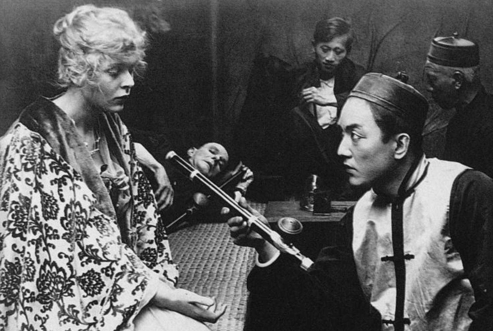
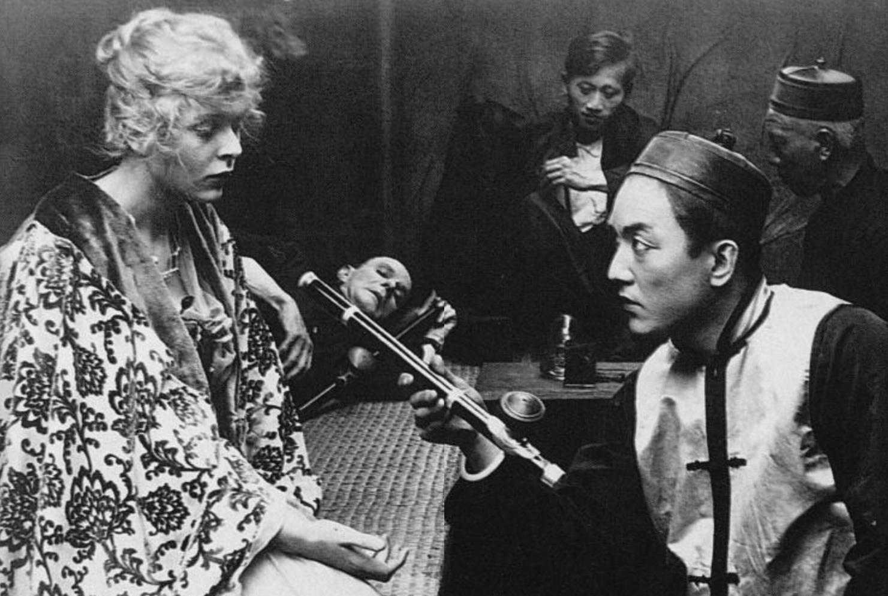
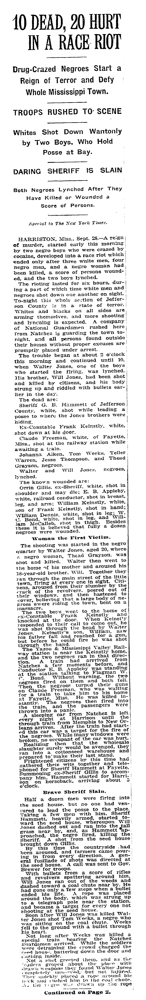
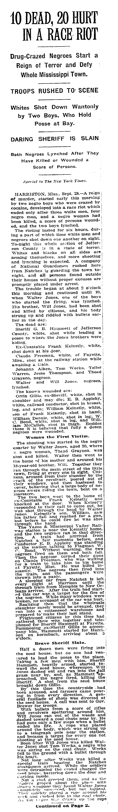

llicit drugs take turns standing in for the unknown of various biopolitical subjects, an expression of their latent enmity and anti-American neurobiology — opium for the Chinaman’s fiendishness, marijuana for the Mexican’s madness, cocaine for the negro’s craze. (Note oxycontin’s exceptionalism, where it stands in for the Caucasian’s despair.)
These narcotics mark their associated users’ exclusions from prevailing notions of futurity — these people’s conflation with the drugs is seen to reveal, rather than beget, their nonproduction, their idleness, their loitering. They are always the origin of their own downfall. They were never going anywhere, except, god willing, away.
chinese opium
 

african-american cocaine
 

mexican marijuana

Another way to put this is that in practice, mind-altering substances work their spells on only a certain demographic of minds. When it comes to BIPOC, they lose their efficacy and do not alter but merely unsheathe a hereditary “nature.” The fear of mind control and losing one’s mind is the privilege of those who can take their intellect for granted, after all. Even if such a point of view can no longer be espoused in so many words, the practical results of the criminal justice system show that there still is a line, spongy like a buffer zone, between the victim who is extenuated by circumstance, and the "accomplice to murder" who is profiled "into prison and throw away the key."
People with a substance use disorder who meet the criteria of skin and suburbia can therefore be limned as hostages to their own biology, whereas those who fail the qualifications remain stuck in the default characterization — inseparable from it.